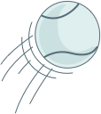

In 5th grade, I was presented with the opportunity to wear an orange sash, miss an hour of class (right before lunch!), and permission to boss kindergartners and rowdy bus riders. “Safety” was the title my school bestowed upon those worthy of this great responsibility. I politely declined after a day of consideration and I remember my teacher being very surprised. She later asked me, in an empty-ish classroom, why I opted to forgo this magical mashup of power that catered to the budding control-freak-bully in me. My 11-year-old self cited the desire to not fall behind in class. But for real, I’m no snitch. Nine years later I’m wrangling a puppy that prefers to walk backwards so he can keep an eye on me. I like to think that Charlie came into my life to be the Safety so I don’t have to. A vocal, grumpy safety.
Stats
7Years
SmellBest Sense
2'2Feet
60ishPounds
HoundyBreed
3Colors
Manners
It’s very important to make sure Charlie doesn’t backslide*. He can be pretty manipulative once he activates neglected dog face. He is also a contender for world champion of perma-sad dog face, so keep this in mind.
*Backslide
[bak•slyd]
v. | to slowly convince someone with dog sneaking and sad face that waiting and being gentle are irrelevant to getting the dog things one wants in life.
Quirks
1000 Kisses
Charlie literally has thousands of kisses ready to deploy per minute. It can become an impediment in your relationship with Charlie if you don’t determine boundaries. Usually thanking him and a stern “that’s enough” should work.
Statue Dog
Warning. Super still dogs are a sign of waiting for your food to drop or the kind of concentration that is about to explode into.
Whistle Blower
Charlie has a built-in alarm with two distinct sounds. One is a sharp, piercing bark and the other is a high-pitched whimper that sounds like a dying battery in a smoke detector. One is activated when he senses peril (or fun) anywhere in the world, but more specifically on the other side of the door. Also triggered by strangers near or in the house, cats being rowdy, mailmen, any loud sound and literally fire alarms (smoke detectors). The other is activated by feeling left out.
Wet Paws
Charlie becomes a difficult dog ballerina whenever it rains. He will refuse to go outside, tip toe around the yard and be very dramatic about using the bathroom on already wet things. Charlie takes pride in watering things with his pee, so rain is confusing for him.
Lean Tower
Imagine you live in the country and that you and Charlie are a primitive form of protection from the elements. You’re going to be the thing that gets leaned on so that Charlie feels happy and safe.
Charlie literally has thousands of kisses ready to deploy per minute. It can become an impediment in your relationship with Charlie if you don’t determine boundaries. Usually thanking him and a stern “that’s enough” should work.
Eats
Goat danish fontina stinking bishop. Croque monsieur cheddar emmental fromage fromage boursin cheese and wine edam. Halloumi hard cheese swiss jarlsberg lancashire croque monsieur macaroni cheese manchego. Roquefort who moved my cheese chalk and cheese caerphilly say cheese cheddar taleggio cheesy feet. Manchego chalk and cheese swiss. Cheddar jarlsberg lancashire. Roquefort manchego fondue ricotta blue castello squirty cheese cauliflower cheese jarlsberg. Cheese slices halloumi pecorino stinking bishop edam cheese and wine say cheese pepper jack. Camembert de normandie melted cheese edam.
Walks
Officer Charlie likes to go outside at least 5 times a day. He is great at walking when wearing his head collar, but otherwise a nightmare on a string. You can consider this Charlie’s walking safety belt that he must wear when leaving the house grounds when he needs to potty and patrol the neighborhood.
Pets
This is easy. If you’ve ever tapped someone on the shoulder or grazed a couch on your way to the fridge, you really can’t go wrong here except if you’re too aggressive. If you fear your ability to properly pet Charlie, you can practice by resting a hand on a friend’s head or scratching your shoulder.
Pets Enjoyed
Pets Not Enjoyed
Tricks
When Charlie completes one of these commands, always reward him with praise + pet or a cookie. Never both. They are equally weighted. No one should be praised for eating a cookie.
Sit
Say this while holding you hand in a fist, like you'e holding glitte and about to open you palm and blowit in someone's face.
Down
Push down like you’re slow-motion bouncing a basketball. but only once. Like you pushed it down and it suddenly deflated.
Leave It
It’s important to move slowly in this situation and draw out the words like Oprah as you back away. You must release him by saying “OK.”
Paw
This looks like asking someone to dance. Since charlie used to be a person, he knows you’re asking for his paw. But he forgot how to dance.
Up
This is like you’re trying to put out a small fire wherever you’re lying or sitting. Charlie wants to lay on that fire. It’s an invitation.
Bang Bang
Pretend your hand is a gun loaded with nacho cheese. Charlie will take a while to pretend die from the nacho cheese, but he recovers very fast.
Stay
Hold your hand like you’re trying to put a spell on him. Charlie is mostly invincible to spells so he probably won’t stay but you can try.
Nose
Hold your hand like you’re going for a sideways low five. He’s going to sideways low five your hand with his nose. Because it’s awesome.
Toys
Knotted Things
Charlie literally has thousands of kisses ready to deploy per minute. It can become an impediment in your relationship with Charlie if you don’t determine boundaries. Usually thanking him and a stern “that’s enough” should work.
Ball
Warning. Super still dogs are a sign of waiting for your food to drop or the kind of concentration that is about to explode into
Stick
Charlie has a built-in alarm when he senses peril anywhere in the world, but more specifically on the other side of the door. Also triggered by strangers near or in the house, cats being rowdy, mailmen, any loud sound and literally fire alarms (smoke detectors).
Chewy
Rough housing, cat wrestling, outside voices inside the type of activities that will lure out Charlie the Safety. He will use the Fire Alarm to.
Things Tied In Knots
Imagine you live in the country and that you and Charlie are a primitive form of protection from the elements. You’re going to the thing that gets leaned on and your job will be to.
Charlie literally has thousands of kisses ready to deploy per minute. It can become an impediment in your relationship with Charlie if you don’t determine boundaries. Usually thanking him and a stern “that’s enough” should work.
 Whistle Blower
Whistle Blower